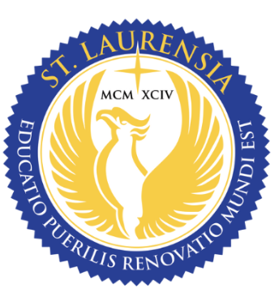

Santa Laurensia Junior High School

Santa Laurensia Junior High School Alam Sutera is a private Catholic junior high school located in the Alam Sutera area, Tangerang Selatan, Banten. The school is part of the Santa Laurensia School community, which provides education from preschool to senior high school.
The junior high school was established in 1995 and has received Accreditation A, showing that it meets high national education standards. The school is located on Jl. Sutera Utama I, Alam Sutera, Serpong Utara, Tangerang Selatan.
Santa Laurensia School focuses on developing students academically, socially, and spiritually. Through a supportive learning environment, the school encourages students to grow intellectually while building strong character and values.
What is Physics?
Physics is a branch of science that studies matter, energy, motion, and the forces in the universe. It helps us understand how things work in the natural world, from very small particles to very large objects like planets and stars.
Physics explains many everyday phenomena, such as why objects fall to the ground, how light travels, how electricity works, and how waves move. By studying physics, scientists can discover the laws that control the behavior of nature.
In daily life, physics is used in many technologies including machines, vehicles, electronics, communication systems, and medical equipment. Because of this, physics plays an important role in the development of science and technology.
About the Website
This website was created as part of an Assessment Project (AP) that combines learning from two subjects: Physics and Information and Communication Technology (ICT).
The goal of this project is to integrate scientific knowledge with digital skills by creating an interactive educational website. Physics concepts are presented through explanations, videos, simulations, and quizzes to make learning more engaging.
From the ICT perspective, the website was built using HTML, CSS, and JavaScript. HTML structures the pages, CSS designs the layout and appearance, and JavaScript adds interactive features.
By combining Physics and ICT, this project demonstrates how technology can be used to support education and make learning more interactive and interesting for students.